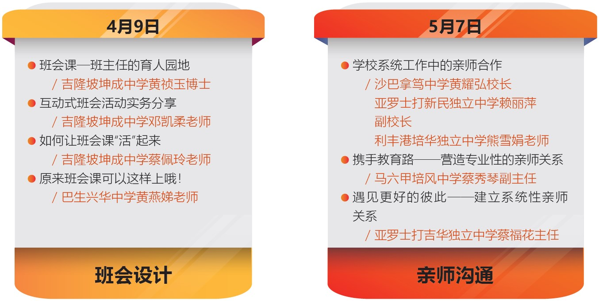

三级辅导系列：班导师专题讲座与分享会
为提升独中班导师在班级经营上的专业发展和知能，董总学生事务局举办了“三级辅导系列：班导师专题讲座与分享会”，分别于2022年4月9日和5月7日在ZOOM线上平台进行，共有255名来自37所独中的教师参与。
此次活动安排了“班会设计”和“亲师沟通”两个主题，同时也诚邀多位资历较深和经验丰富的独中教育工作者担任主题分享人。活动详情如下：
在“班会设计”的场次中，黄祯玉博士以ASK（Attitude, Skill, Knowledge）概念作为基础，引导老师们设计班会活动。邓凯柔老师分享其互动式班会活动设计，将ASK的概念运用在班会课上。蔡佩玲老师的分享是从了解每个学生的特色来让学生们都参与其中，让班会课“活”起来。黄燕娣老师则分享其以实体课为主的班会课实例，从而培养学生感恩、省思和自我表达的能力。在最后分组讨论中，老师们进行脑力激荡，各组设计出一场班会活动课。老师们在回馈中表示获益良多，分享人的内容对老师们在班会活动设计上有很大的启发和帮助，同时期待给予更充裕的讨论时间，让班会活动的设计更为完整。
在“亲师沟通”的场次里，黄耀弘校长、赖丽萍副校长和熊雪娟老师分享了学校系统工作中的亲师沟通。分享中提到，在学校的体制里，班导师是学校各行政单位、各科任老师、学生家长和学生的连接点；老师们应该如何与各方，尤其是与学生家长建立良好的合作关系。蔡秀琴副主任分享了班导师如何在带班的过程中呈现自身的专业性，从而让家长对班导师产生信心。蔡福花主任分享自身带班的经验和心得，以多个例子带出和学生有温度的互动，与家长一同建立系统性的亲师关系。在分组讨论中，老师们也以自身的经验，按照各个主题在各组中与伙伴们分享和讨论学习心得。老师们在回馈中表示，此次活动所提供的参考方案，尤其是对新手班导师的教学工作，有很大的帮助，同时期盼能安排更充足的分享和讨论时间。